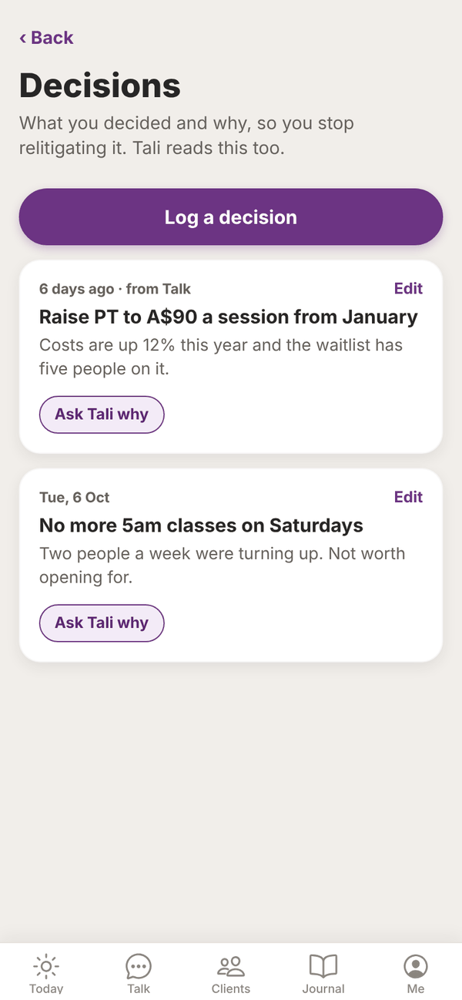
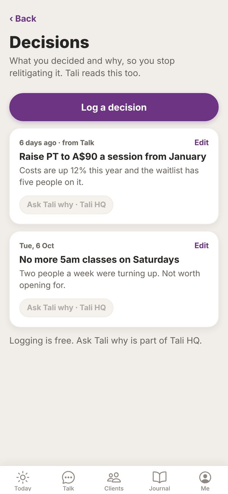

Tali HQ guide
Decisions
Log what you decided and why, so you stop going over it again, and ask Tali later whether it still holds.
Decisions is a log of what you decided and why. Next time you start second guessing yourself, the reasoning is right there, and Tali reads it too. Logging is free on every plan. Free Asking Tali why is part of Tali HQ. Tali HQ
Open it from Your world, Growth, Decisions. Your latest decision also shows under More from Tali on Today.


Log a decision#
- Tap Log a decision.
- In What did you decide?, write it in a line, like "Raise prices to A$90 a session from January".
- In Why, write the reasoning, so future you remembers.
- Under When, pick Today, Yesterday, Last week or Last month, or type a date in Or a date (YYYY-MM-DD).
- Tap Save.
Or just tell Tali#
In Talk, say "I've decided to stop the Saturday 5am class because only two people come". Tali logs it with your reasoning, and it shows "from Talk" in the list. She only logs decisions you've actually made, never her own suggestions or things you're still thinking about.
Ask Tali why Tali HQ#
Tap Ask Tali why on any decision. Talk opens with "Why did I decide: ... Remind me of my reasoning and whether it still holds." ready to send. Tali reminds you of your reasoning and tells you whether it still stacks up with what she knows now.
Edit or delete#
Tap a decision (or its Edit link) to change it. To delete, tap Delete, then Tap again to delete.
Questions#
Is Decisions on the Free plan?
Yes, logging decisions is free on every plan. Ask Tali why needs Tali HQ or Pro.
Does logging a decision cost credits?
No. Asking Tali why is a normal chat message, so it uses 1 credit.
Why didn't Tali log something I said in Talk?
She only logs a decision when you say you've made it. "I'm thinking about..." won't be logged. Say "I've decided..." or log it yourself.
Does Tali use my decisions?
Yes. She reads them so her advice fits what you've already decided.